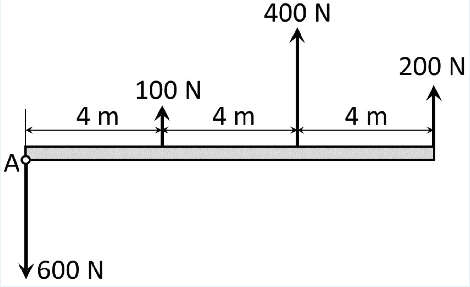
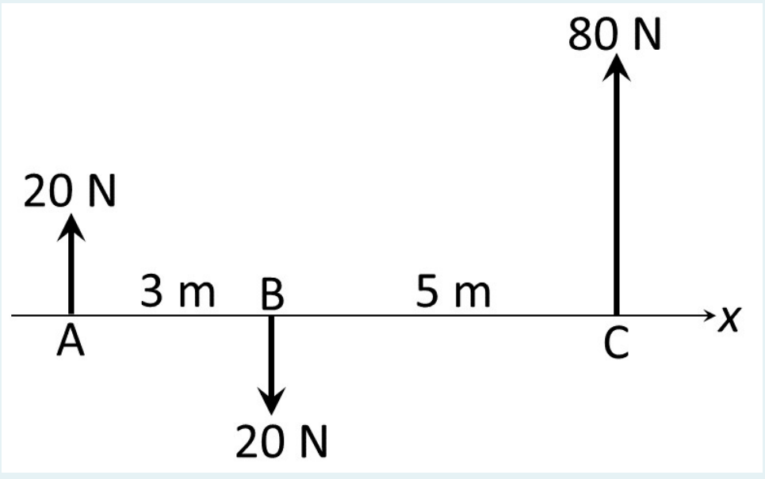
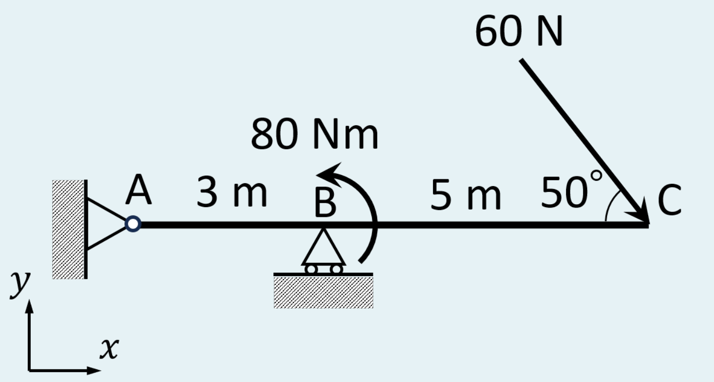

第8回・中間試験の後ろに
A 問題集 第1〜7回のぜんぶ
各回の例題・章末問題・小テストのうち、段階 A（確認：小テスト水準） の印がついたものを、回の順に集めた（計 54 問）。「A｜…」「A/B」「A〜B」など A を含む印のものも入れてある。例題は解答が本文に出ているので、先に紙で解いてから 読むこと。章末問題の解答は折りたたんである。
この問題集について 本文は各回の教材からの自動抽出 で、内容は元の教材と同じ（書き換えていない）。例題の中で「例題3 の結果」「図 2.x」のように前後を参照している箇所は、元の教材に戻って確認すること。第8回の模擬試験（基礎セット）の問題は重複するので入れていない。
1 第1回 イントロダクションと力12問 ｜ 教材を開く 第1回 例題1〔A｜自作〕質量を重さに直す
質量 500 kg の物体の重さを N で求め、3桁と4桁で書け。
解答
① (1.4) に入れる：$W=mg=500\times9.81=4905\ \mathrm{N}$。
② 単位の確かめ：$\mathrm{kg\times m/s^2=N}$。
③ 3桁：$4.91\times10^3\ \mathrm{N}=4.91\ \mathrm{kN}$。4桁：$4.905\times10^3\ \mathrm{N}$。
第1回 例題2〔A｜自作〕角度と成分の行き来
(1) $x$ 軸から 150° の向きで大きさ 10 N の力の成分を求めよ。(2) 成分が $(-3,\ -4)$ N の力の大きさと向き（$x$ 軸から反時計回りの角）を求めよ。
解答
① (1) (2.3) に入れる：$\boldsymbol F=(10\cos150^\circ,\ 10\sin150^\circ)=(10\times(-0.8660),\ 10\times0.5000)=(-8.660,\ 5.000)\ \mathrm{N}$。
② (1) の確かめ：150° は第2象限なので $(-,+)$。大きさ $\sqrt{8.660^2+5.000^2}=10.00$ で元に戻る。
③ (2) 大きさ：$\sqrt{3^2+4^2}=5.00\ \mathrm{N}$。
④ (2) 向き：$\tan^{-1}\{(-4)/(-3)\}=\tan^{-1}(1.333)=53.13^\circ$。しかし $F_x\lt0$ なので 180° を足して $\theta=233.1^\circ$（第3象限、左下）。atan2(-4, -3) $=-126.9^\circ$ も同じ向き（$-126.9^\circ+360^\circ=233.1^\circ$）。
第1回 例題3〔A｜自作〕大きさ・単位ベクトル・方向角
力 $\boldsymbol{F}=(30,\ 40)\ \mathrm{N}$ の大きさ、単位ベクトル、$x$ 軸・$y$ 軸とのなす角を求めよ。
解答
① 大きさ：$F=\sqrt{30^2+40^2}=\sqrt{2500}=50.0\ \mathrm{N}$。
② 単位ベクトル：$\boldsymbol{f}=(30/50,\ 40/50)=(0.600,\ 0.800)$。検算：$0.6^2+0.8^2=1$。
③ $\cos\alpha=0.600$ より $\alpha=53.1^\circ$、$\cos\beta=0.800$ より $\beta=36.9^\circ$。確かめ：$\alpha+\beta=90^\circ$（2次元では $x$ 軸と $y$ 軸が直交しているので当然）。
第1回 例題4〔A｜自作〕3次元の方向余弦
$\boldsymbol{V}=(2,\ -3,\ 6)$ の単位ベクトルと、各軸とのなす角を求めよ。
解答
① $V=\sqrt{4+9+36}=\sqrt{49}=7$。
② $\boldsymbol{v}=(2/7,\ -3/7,\ 6/7)=(0.2857,\ -0.4286,\ 0.8571)$。
③ $\alpha=\cos^{-1}0.2857=73.4^\circ$、$\beta=\cos^{-1}(-0.4286)=115.4^\circ$、$\gamma=\cos^{-1}0.8571=31.0^\circ$。$\cos^{-1}$ は 0°〜180° を返すので、なす角では象限の心配はいらない。
④ 検算：$(4+9+36)/49=1$。$y$ 成分が負なので、$y$ 軸とのなす角は 90° より大きい。
第1回 例題5〔A｜例題2・3の準備〕2点から単位ベクトルを作る
点 $\mathrm A(0,0)$、$\mathrm B(0,2)$、$\mathrm C(5,-1)$（単位 m）について、C から A へ向かう単位ベクトル $\boldsymbol u_{\mathrm{CA}}$ と、C から B へ向かう単位ベクトル $\boldsymbol u_{\mathrm{CB}}$ を求めよ。
解答
① C→A：終点−始点 $=(0-5,\ 0-(-1))=(-5,\ 1)$。長さ $\sqrt{25+1}=\sqrt{26}=5.099$。
② $\boldsymbol u_{\mathrm{CA}}=(-5,\ 1)/5.099=(-0.9806,\ 0.1961)$。
③ C→B：$(0-5,\ 2-(-1))=(-5,\ 3)$。長さ $\sqrt{25+9}=\sqrt{34}=5.831$。$\boldsymbol u_{\mathrm{CB}}=(-0.8575,\ 0.5145)$。
④ 検算：$0.9806^2+0.1961^2=1.000$、$0.8575^2+0.5145^2=1.000$。どちらも左上向き（$(-,+)$）で、図2.4と合う。
第1回 例題6〔A｜自作〕斜め方向の成分
$\boldsymbol a=(3,\ 4)$ の、単位ベクトル $\boldsymbol u=(1,\ 1)/\sqrt2$ 方向の成分を求めよ。
解答
① $\boldsymbol u$ が単位ベクトルか確かめる：$(1/\sqrt2)^2+(1/\sqrt2)^2=1$。
② (2.9)：$\boldsymbol a\cdot\boldsymbol u=3\times\dfrac{1}{\sqrt2}+4\times\dfrac{1}{\sqrt2}=\dfrac{7}{\sqrt2}=\dfrac{7}{1.414}=4.950$。
③ 確かめ：$a=5$ なので、成分 4.950 は 5 より少し小さい。$\boldsymbol a$（$x$ 軸から 53.1°）と $\boldsymbol u$（45°）のなす角は 8.1° と小さく、$5\cos8.1^\circ=4.950$ と一致する。
第1回 例題7〔A｜自作〕公式と消去法で解く
$2x_1+x_2=5$、$x_1-x_2=1$ を解け。
解答
① 係数：$a_{11}=2,\ a_{12}=1,\ a_{21}=1,\ a_{22}=-1$、$b_1=5,\ b_2=1$。
② $d=2\times(-1)-1\times1=-3$。
③ (2.10)：$x_1=\{(-1)(5)-(1)(1)\}/(-3)=-6/(-3)=2$、$x_2=\{-(1)(5)+(2)(1)\}/(-3)=-3/(-3)=1$。
④ 検算（元の式に代入）：$2\cdot2+1=5$、$2-1=1$。どちらも成り立つ。
第1回 例題8〔A｜自作〕大きさは足し算にならない
大きさ 100 N の力 $\boldsymbol{F}_1$（$x$ 軸方向）と、大きさ 100 N の力 $\boldsymbol{F}_2$（$x$ 軸から 60°）が1点に働く。合力の大きさと向きを求めよ。
解答
① 成分に直す（(2.3)）：$\boldsymbol{F}_1=(100,\ 0)$、$\boldsymbol{F}_2=(100\cos60^\circ,\ 100\sin60^\circ)=(50.0,\ 86.60)\ \mathrm{N}$。
② 成分ごとに足す（(4.2)）：$\boldsymbol{R}=(150.0,\ 86.60)\ \mathrm{N}$。
③ 大きさ：$R=\sqrt{150^2+86.60^2}=\sqrt{22500+7500}=\sqrt{30000}=173.2\ \mathrm{N}$。
④ 向き：$R_x\gt0$ なので $\tan^{-1}(86.60/150.0)=30.0^\circ$（2力のちょうど真ん中。同じ大きさの2力なので平行四辺形がひし形になり、対角線が角を2等分するから）。
⑤ $F_1+F_2=200\ \mathrm{N}$ だが $R=173\ \mathrm{N}$。大きさの和と合力の大きさは等しくない。
第1回 例題15〔A｜自作〕3力の合成と象限
1点に、$x$ 軸から 0° の向きに 200 N、120° の向きに 150 N、225° の向きに 100 N の3力が働く。合力の大きさと向きを求めよ。
出典：本教材の自作。
解答
① 3力は1点に働くので、そのまま合成できる。
② $x$ 右、$y$ 上。
③ (2.3)：$\boldsymbol F_1=(200,\ 0)$、$\boldsymbol F_2=(150\cos120^\circ,\ 150\sin120^\circ)=(-75.00,\ 129.9)$、$\boldsymbol F_3=(100\cos225^\circ,\ 100\sin225^\circ)=(-70.71,\ -70.71)\ \mathrm N$。
④ (4.2)：$R_x=200-75.00-70.71=54.29$、$R_y=0+129.9-70.71=59.19\ \mathrm N$。
⑤ $R=\sqrt{54.29^2+59.19^2}=80.32\ \mathrm N$。$R_x\gt0$ なので向きは $\tan^{-1}(59.19/54.29)=47.47^\circ$。
⑥ 確かめ：$R_x\gt0,\ R_y\gt0$ で第1象限、47.5° と合う。大きさの和 450 N よりずっと小さい（力どうしが打ち消し合っている）。
第1回 問1〔A｜自作〕単位と有効数字 (1) 質量 2.50 kg の物体の重さを N で求めよ。(2) 4905 N を有効数字3桁で、kN を使って書け。
出典：本教材の自作。
解答
① (1) $W=mg=2.50\times9.81=24.525$。3桁で $24.5\ \mathrm N$。
② (2) $4905\ \mathrm N=4.905\ \mathrm{kN}$、3桁に丸めて $4.91\ \mathrm{kN}$（$4.91\times10^3\ \mathrm N$）。
第1回 問2〔A｜自作〕内積の計算 $\boldsymbol{a}=(3,\ 4)$、$\boldsymbol{b}=(4,\ -3)$ とする。(1) $\boldsymbol{a}\cdot\boldsymbol{b}$ を求め、2つのベクトルの関係を述べよ。(2) $\boldsymbol a$ と $\boldsymbol c=(1,\ 0)$ のなす角を求めよ。
出典：本教材の自作。
解答
① (1) (2.9)：$3\times4+4\times(-3)=0$。内積が 0 なので $\cos\theta=0$、2つは直交 している。
② (2) $\cos\theta=\boldsymbol a\cdot\boldsymbol c/(ac)=3/(5\times1)=0.600$、$\theta=53.1^\circ$（例題3の $\alpha$ と同じ）。
第1回 問3〔A｜自作〕ロープの強さ 例題11で、ロープと水平のなす角を 45° にすると、各ロープの張力はいくらになるか。30° のときと比べよ。
出典：本教材の自作。
解答
① (6.2)：$T=W/(2\sin45^\circ)=4905/(2\times0.7071)=3468\ \mathrm{N}\approx3.47\ \mathrm{kN}$。
② 30° のとき（4.91 kN）より小さい。ロープを立てるほど、各ロープの負担は減る（図6.3）。
2 第2回 モーメント8問 ｜ 教材を開く 第2回 例題1〔A｜教科書 図2.25〕天秤の左右の「回す働き」
図2.25 で、左のおもりと右のおもりが支点のまわりに棒を回そうとする働き（力×距離）をそれぞれ求め、どちら向きに回そうとするかを答えよ。
解答
① 左：$2F\times\dfrac{L}{3}=\dfrac{2FL}{3}$。左側が下がる向き＝反時計回り 。
② 右：$F\times\dfrac{2L}{3}=\dfrac{2FL}{3}$。右側が下がる向き＝時計回り 。
③ 大きさが等しく向きが逆なので、回す働きは打ち消し合い、棒は回らない（観察どおり）。
第2回 例題2〔A｜自作〕レンチでボルトを回す
長さ 0.25 m のレンチの先端を、柄に直角に 200 N で押す。ボルトの中心まわりのモーメントの大きさを求めよ。
解答
① 力は柄に直角なので、作用線へ下ろした垂線は柄そのもの。腕 $L=0.25\ \mathrm m$。
② (1.1)：$M=FL=200\times0.25=50.0\ \mathrm{N\cdot m}$。
③ 単位の確かめ：$\mathrm N\times\mathrm m=\mathrm{N\cdot m}$。同じ 200 N でも、柄の中ほど（0.125 m）を押せば 25.0 N·m に半減する。長いレンチが効くのはこのため。
第2回 例題3〔A｜自作〕棒に働く4つの力の合モーメント
水平な棒の左端 O から 0.5 m の点に下向き 40 N、1.2 m の点に上向き 30 N、2.0 m の点（右端）に下向き 50 N と、右端に棒に沿って右向き 60 N が働く。O まわりの合モーメントを求めよ。
O
F1 = 40 N
F2 = 30 N
F3 = 50 N
F4 = 60 N
0.5 m
1.2 m
2.0 m
図1.3 棒に働く4つの力。 解答
① 鉛直な力の作用線は鉛直線なので、O からの垂線は水平距離。$F_1$：右側を下げる＝時計回り、$M_1=-40\times0.5=-20.0$。
② $F_2$：右側を上げる＝反時計回り、$M_2=+30\times1.2=+36.0$。$F_3$：時計回り、$M_3=-50\times2.0=-100.0$。
③ $F_4$：作用線（棒の中心線）が O を通るので腕 0、$M_4=0$。
④ (1.3)：$M=-20.0+36.0-100.0+0=-84.0\ \mathrm{N\cdot m}$。答え：84.0 N·m（時計回り） 。
⑤ 確かめ：時計回りの合計 120.0、反時計回り 36.0 で、差 84.0 が時計回りに残る。いちばん大きい $F_4$（60 N）が 0 なのは、図2.27(c) と同じく作用線が O を通るから。
第2回 例題4〔A｜自作〕外積の計算と符号
$\boldsymbol r=(0.3,\ 0.4)\ \mathrm m$、$\boldsymbol F=(50,\ -20)\ \mathrm N$ について、$\boldsymbol r\times\boldsymbol F$ を求め、(2.4) で確かめよ。
解答
① (2.3)：$\boldsymbol r\times\boldsymbol F=0.3\times(-20)-0.4\times50=-6.0-20.0=-26.0\ \mathrm{N\cdot m}$。
② 角で確かめる：$\boldsymbol r$ の角は $\tan^{-1}(0.4/0.3)=53.13^\circ$、$\boldsymbol F$ の角は $\tan^{-1}(-20/50)=-21.80^\circ$（第4象限）。$\boldsymbol r$ から $\boldsymbol F$ へは $-21.80^\circ-53.13^\circ=-74.93^\circ$、つまり時計回りに 74.93°。
③ (2.4)：$r=0.5\ \mathrm m$、$F=\sqrt{50^2+20^2}=53.85\ \mathrm N$、$0.5\times53.85\times\sin(-74.93^\circ)=-26.0$。一致。負なのは $\boldsymbol F$ が $\boldsymbol r$ から見て時計回り側にあるため。
第2回 例題12〔A｜自作〕斜めに押すスパナ
長さ 0.40 m のスパナの先を、柄と 75° をなす向きに 25 N で押す。ボルトまわりのモーメントの大きさを求めよ。柄に直角に押すときと比べよ。
解答
① (3.1)：$M=FL\sin\theta=25\times0.40\times\sin75^\circ=25\times0.40\times0.9659=9.659\ \mathrm{N\cdot m}$。
② 直角なら $25\times0.40=10.00$ N·m。75° でも約 3.4% しか減らない（図3.1：90° 付近の $\sin$ は平ら）。
第2回 問1〔A｜自作〕腕と符号 点 O から右へ水平に 0.35 m 離れた点に、鉛直下向きに 80 N が働く。O まわりのモーメントを符号つきで求めよ。同じ力を、同じ鉛直線上で O より 0.20 m 高い位置に移すとどうなるか。
出典：本教材の自作。
解答
① 作用線は鉛直線で、O からの垂線は水平の 0.35 m。O の右で下向き＝時計回り。$M=-80\times0.35=-28.0\ \mathrm{N\cdot m}$。
② 成分の式でも：$\boldsymbol r=(0.35,\ 0)$、$\boldsymbol F=(0,\ -80)$、$M=(-80)(0.35)-0=-28.0$。
③ 同じ鉛直線上に移すと $\boldsymbol r=(0.35,\ 0.20)$。$M=(-80)(0.35)-0\times0.20=-28.0$ で変わらない （同じ作用線。1.6 節）。
第2回 問2〔A｜自作〕外積で計算 基準点から着力点へのベクトルが $\boldsymbol r=(-0.2,\ 0.5)$ m、力が $\boldsymbol F=(40,\ -30)$ N のとき、モーメントを求め、向きを答えよ。
出典：本教材の自作。
解答
① (3.4)：$M=F_yr_x-F_xr_y=(-30)(-0.2)-(40)(0.5)=6.0-20.0=-14.0\ \mathrm{N\cdot m}$。
② 答え：14.0 N·m（時計回り）。確かめ：$F_y$（下向き）は基準点の左 にあるので反時計回り（＋6.0）、$F_x$（右向き）は基準点より上にあるので時計回り（−20.0）。
第2回 問3〔A｜自作〕偶力 互いに 0.24 m 離れた平行な2本の作用線に沿って、大きさ 15 N の逆向きの力が働く。この偶力のモーメントの大きさはいくらか。基準点を変えると値は変わるか。
出典：本教材の自作。
解答
① (4.2)：$|M|=Fd=15\times0.24=3.60\ \mathrm{N\cdot m}$。
② 偶力のモーメントは基準点を含まない (4.1) ので、どの点まわりでも 3.60 N·m（向きも同じ）。
3 第2回 小テスト 小テスト解説3問 ｜ 教材を開く 第2回 小テスト 2A-1〔A〕
A force of 20 N at 30 degree from the $x$-axis is acting at the point (5, −4) m. Using Varignon's theorem , determine the moment of the force about the origin.
（訳：$x$ 軸から 30° の向きの 20 N の力が点 (5, −4) m に働く。バリニオンの定理を使って 、原点まわりのモーメントを求めよ。）解答欄：モーメントの大きさ（正の値）[N·m]、向き。
解答
① 切り出す ：力は1本、基準点は原点 O、着力点は Q(5, −4)。
② 座標軸 ：問題の $x$, $y$ 軸をそのまま使う。反時計回りを＋。
③ 成分で書く ：力は $x$ 軸から 30° なので（第1回の成分分解）
$$F_x=20\cos30^\circ=20\times0.8660=17.32\ \mathrm N,\qquad F_y=20\sin30^\circ=20\times0.5=10.00\ \mathrm N$$
位置ベクトルは基準点 → 着力点：$\boldsymbol r=(5-0,\ -4-0)=(5,\ -4)$ m。
④ バリニオンの定理で式を立てる ：力 $\boldsymbol F$ のモーメントは、分力 $F_x$ と $F_y$ のモーメントの和に等しい（教材 3.3節）。下 を右に押すので反時計回り：$-F_xr_y=-17.32\times(-4)=+69.28$ N·m。
⑤ 解く ：$M=50.00+69.28=119.28\ \mathrm{N\cdot m}$。成分の式 (3.4) $M=F_yr_x-F_xr_y=10\times5-17.32\times(-4)$ に一度に代入しても同じ値になる。
⑥ 確かめ ：単位は N × m = N·m。符号は正なので反時計回り。どちらの分力も反時計回りに回すので、和が正になるのは図の感覚とも合う。
答え：大きさ 119.3 N·m（119.28）、向き：反時計回り
第2回 小テスト 2A-2〔A〕
図のように、梁に垂直な複数の力が作用している。これらを点Aにおける単一の力とモーメントに置き換えなさい。

2A-2 の図。出典：第2回小テスト（Moodle 課題 2A 問題2） 解答欄：力の大きさ（正の値）[N]、力の向き、モーメントの大きさ（正の値）[N·m]、モーメントの向き。
解答
① 切り出す ：梁全体に働く4本の力を、点 A に集める（教材 5.3節）。
② 座標軸 ：A を原点とし、梁に沿って右を $x$、上を $y$ とする。反時計回りを＋。
③ 成分で書く ：すべて鉛直な力なので $F_x=0$。着力点は A から見て $\boldsymbol r=(x_i,\ 0)$。
力 $x_i$ [m] $F_{iy}$ [N] $M_i=F_{iy}x_i$ [N·m] 600 N（下） 0 −600 0 100 N（上） 4 +100 +400 400 N（上） 8 +400 +3200 200 N（上） 12 +200 +2400 合計 +100 +6000
④ 式を立てる ：合力は式 (5.2)、合モーメントは式 (5.3) を使う。$r_y=0$ なので (3.4) の $-F_xr_y$ の項は消え、$M_i=F_{iy}x_i$ だけが残る。
$$F_y=\sum F_{iy}=-600+100+400+200,\qquad M_A=\sum F_{iy}x_i=(-600)(0)+100(4)+400(8)+200(12)$$
⑤ 解く ：$F_y=+100$ N、$M_A=0+400+3200+2400=+6000$ N·m。
⑥ 確かめ ：600 N は A を通るので腕 0 で、モーメントには効かない（作用線が基準点を通る）。上向きの3本はどれも A の右を上に押すので、すべて反時計回りになる。単位は N と N·m。
答え：力 100 N・上向き、モーメント 6000 N·m・反時計回り
第2回 小テスト 2B-1〔A〕
図のように、$x$ 軸に垂直に3つの力が作用しているとき、これら3つの力と等価な作用を系に与える一つの力の大きさ、向き、および力の作用点の位置を求めなさい。

2B-1 の図。出典：第2回小テスト（Moodle 課題 2B 問題1） 解答欄：力の大きさ（正の値）[N]、向き、作用点「点Aから右向きに □ m の点」。
解答
① 切り出す ：3本の力をいったん点 A に集め（教材 5.3節）、そのあと1本の力に戻す（教材 5.5節）。
② 座標軸 ：A を原点とし、右を $x$、上を $y$ とする。反時計回りを＋。着力点は A(0)、B(3)、C(3+5=8) m。
③ 成分で書く ：すべて鉛直なので $F_x=0$。$F_{Ay}=+20$、$F_{By}=-20$、$F_{Cy}=+80$ N。
④ 式を立てる ：
$$F_y=20-20+80,\qquad M_A=\sum F_{iy}x_i=20(0)+(-20)(3)+80(8)$$
1本の力 $F_y$ を A から右へ $d$ の位置に置いたとき、A まわりのモーメントが $M_A$ と等しくなればよい：$F_y\,d=M_A$。（なぜこの式か：「等価」とは、合力も、どの点まわりのモーメントも同じという意味。合力はもう一致しているので、A まわりのモーメントを合わせれば十分である（教材 式5.4 で、1点で合えばどの点でも合う）。）
⑤ 解く ：$F_y=+80$ N。$M_A=0-60+640=+580$ N·m。$d=M_A/F_y=580/80=7.25$ m。
⑥ 確かめ（別の見方） ：A の 20 N（上）と B の 20 N（下）は大きさが等しく向きが逆なので、偶力 になる（教材 4.1節）。そのモーメントは $-20\times3=-60$ N·m（時計回り）。偶力は合力 0 なので、残るのは C の 80 N だけだ。80 N を左へ $s$ ずらすと、A まわりのモーメントは $80\times s$ だけ減る。$80s=60$ から $s=0.75$ m、位置は $8-0.75=7.25$ m で一致する。
答え：大きさ 80 N、上向き、作用点は点 A から右へ 7.25 m の点
4 第3回 3次元の力とモーメント8問 ｜ 教材を開く 第3回 例題1〔A｜自作〕2点を結ぶ向きの力
点 A$(2,\,0,\,0)$ m から点 B$(0,\,3,\,6)$ m の向きに、大きさ 300 N の力が働く。この力を成分で表せ。
解答
① $\overrightarrow{\mathrm{AB}}=$ 終点−始点 $=(0-2,\ 3-0,\ 6-0)=(-2,\ 3,\ 6)$ m。
② 長さ (1.2)：$\sqrt{(-2)^2+3^2+6^2}=\sqrt{4+9+36}=\sqrt{49}=7$ m。単位ベクトル $\boldsymbol u=(-2,\ 3,\ 6)/7$。
③ $\boldsymbol F=300\boldsymbol u=(-85.71,\ 128.6,\ 257.1)$ N。
④ 確かめ：$\sqrt{85.71^2+128.6^2+257.1^2}=300.0$ N。各成分の符号は $\overrightarrow{\mathrm{AB}}$ と同じ（$x$ は負の向き、$y,z$ は正の向き）。
第3回 例題2〔A｜自作〕2力の合成
$\boldsymbol F_1=(10,\ -20,\ 15)$ N、$\boldsymbol F_2=(-4,\ 8,\ 10)$ N の合力とその大きさを求めよ。
解答
① (1.4)：$\boldsymbol R=(10-4,\ -20+8,\ 15+10)=(6,\ -12,\ 25)$ N。
② (1.2)：$R=\sqrt{36+144+625}=\sqrt{805}=28.37$ N。
③ 確かめ：$F_1=\sqrt{725}=26.93$ N、$F_2=\sqrt{180}=13.42$ N で、$R=28.37\le F_1+F_2=40.34$ N（丸める前の値で足した。三角形の2辺の和は他の1辺より長い）を満たす。
第3回 例題4〔A｜自作〕モーメントベクトルを読む
$\boldsymbol M=(3,\ -4,\ 12)$ N·m が表す回転作用の大きさ・回転軸・向きを述べよ。
解答
① 大きさ：$|\boldsymbol M|=\sqrt{9+16+144}=\sqrt{169}=13$ N·m。
② 回転軸：基準点を通り、単位ベクトル $\boldsymbol M/|\boldsymbol M|=(3,\ -4,\ 12)/13=(0.231,\ -0.308,\ 0.923)$ の向きの直線（ほぼ鉛直で、少し傾いている）。
③ 向き：その単位ベクトルの先の側から見下ろして、反時計回り（右ねじがその向きへ進む回し方）。
第3回 例題5〔A｜自作〕外積の計算と性質の確かめ
$\boldsymbol a=(2,\ -1,\ 1)$、$\boldsymbol b=(1,\ 2,\ -1)$ のとき、$\boldsymbol a\times\boldsymbol b$ を求め、定理の1・2 を数値で確かめよ。
解答
① (3.1)：$x$ 成分 $a_yb_z-a_zb_y=(-1)(-1)-(1)(2)=1-2=-1$。$y$ 成分 $a_zb_x-a_xb_z=(1)(1)-(2)(-1)=1+2=3$。$z$ 成分 $a_xb_y-a_yb_x=(2)(2)-(-1)(1)=4+1=5$。$\boldsymbol a\times\boldsymbol b=(-1,\ 3,\ 5)$。
② 垂直：$\boldsymbol a\cdot(\boldsymbol a\times\boldsymbol b)=-2-3+5=0$、$\boldsymbol b\cdot(\boldsymbol a\times\boldsymbol b)=-1+6-5=0$ ✓。
③ 大きさ：$|\boldsymbol a\times\boldsymbol b|=\sqrt{1+9+25}=\sqrt{35}=5.916$。一方 $a=b=\sqrt6$、$\boldsymbol a\cdot\boldsymbol b=2-2-1=-1$ なので (3.3) の右辺 $=6\cdot6-(-1)^2=35$ ✓。
④ なす角：$\cos\theta=-1/6$ より $\theta=99.59^\circ$、$ab\sin\theta=6\times0.9860=5.916$ ✓。
第3回 例題7〔A｜自作〕水平な腕の先の重さ
点 P（原点）から $x$ 軸に沿って水平に伸びる腕の先 $(0.5,\ 0,\ 0)$ m に、重さ 100 N（下向き）が働く。P まわりのモーメントベクトルを求め、向きの意味を説明せよ。
解答
① $\boldsymbol r=(0.5,\ 0,\ 0)$ m、$\boldsymbol F=(0,\ 0,\ -100)$ N。
② (2.54)：$x$ 成分 $F_zr_y-F_yr_z=(-100)(0)-0=0$、$y$ 成分 $F_xr_z-F_zr_x=0-(-100)(0.5)=50$、$z$ 成分 $F_yr_x-F_xr_y=0$。$\boldsymbol M=(0,\ 50,\ 0)$ N·m。
③ 向き：$+y$ 向き。$+y$ 軸の先から見ると、$z\to x$ の向き（右手系で $\boldsymbol k\times\boldsymbol i=\boldsymbol j$）が反時計回り。$z$ 軸（上）を $x$ 軸（腕の先）へ倒す向き、つまり腕の先が下がる向き で、直感どおり。
④ 確かめ：大きさ $50=FL=100\times0.5$（腕は水平距離 0.5 m）。
第3回 問1〔A｜OpenStax UP1 10章 問83〕原点まわりのトルク 位置 $\boldsymbol r=(-2.0\,\boldsymbol i+4.0\,\boldsymbol j)$ m の点に加えた力 $(5.0\,\boldsymbol i-2.0\,\boldsymbol j+1.0\,\boldsymbol k)$ N の、原点まわりのトルクを求めよ。
原文：What is the torque about the origin of the force (5.0 i − 2.0 j + 1.0 k) N if it is applied at the point whose position is r = (−2.0 i + 4.0 j) m?
出典：OpenStax, University Physics Volume 1 , Chapter 10 Problems, Problem 83（CC BY 4.0）https://openstax.org/books/university-physics-volume-1/pages/10-problems 。和訳は本教材。公式解答 $4.0\boldsymbol i+2.0\boldsymbol j-16.0\boldsymbol k$ N·m と照合済み。
解答
① $\boldsymbol r=(-2,\ 4,\ 0)$、$\boldsymbol F=(5,\ -2,\ 1)$。
② (2.54)：$x$ $F_zr_y-F_yr_z=1\times4-0=4$、$y$ $F_xr_z-F_zr_x=0-1\times(-2)=2$、$z$ $F_yr_x-F_xr_y=(-2)(-2)-5\times4=4-20=-16$。
③ $\boldsymbol M=(4.0,\ 2.0,\ -16.0)$ N·m。確かめ：$\boldsymbol M\cdot\boldsymbol r=-8+8+0=0$ ✓、$\boldsymbol M\cdot\boldsymbol F=20-4-16=0$ ✓。
第3回 問2〔A｜Engineering Statics 例題2.5.5〕指定した向きの力の成分 点 A に働く 5 kN の力 $\boldsymbol F$ が、A から B へ向かう線の向きであるとき、$\boldsymbol F$ の成分を求めよ。A$=(2,\ 3,\ -2.1)$ m、B$=(-2.5,\ 1.5,\ 2.2)$ m。
原文：Determine the components of a 5 kN force F acting at point A, in the direction of a line from A to B.
出典：Baker & Haynes, Engineering Statics , §2.5, Example 2.5.5（CC BY-NC-SA 4.0）https://engineeringstatics.org/Chapter_02-unit-vectors.html 。和訳は本教材。公式解答 $(-3.51,\ -1.17,\ 3.36)$ kN と照合済み。
解答
① $\overrightarrow{\mathrm{AB}}=(-4.5,\ -1.5,\ 4.3)$、長さ $\sqrt{20.25+2.25+18.49}=\sqrt{40.99}=6.402$ m。
② (1.3)：$\boldsymbol F=5\times(-4.5,\ -1.5,\ 4.3)/6.402=(-3.51,\ -1.17,\ 3.36)$ kN。
③ 確かめ：$\sqrt{3.514^2+1.171^2+3.358^2}=5.00$ kN ✓。
第3回 問3〔A｜自作〕外積の順序 $\boldsymbol r=(0.2,\ 0,\ 0.1)$ m、$\boldsymbol F=(0,\ 40,\ 0)$ N のとき、$\boldsymbol r\times\boldsymbol F$ と $\boldsymbol F\times\boldsymbol r$ を求めよ。点まわりのモーメントはどちらか。
出典：本教材の自作。
解答
① $\boldsymbol r\times\boldsymbol F$：$x$ $F_zr_y-F_yr_z=0-40\times0.1=-4$、$y$ $F_xr_z-F_zr_x=0$、$z$ $F_yr_x-F_xr_y=40\times0.2=8$ → $(-4,\ 0,\ 8)$ N·m。
② $\boldsymbol F\times\boldsymbol r=-\boldsymbol r\times\boldsymbol F=(4,\ 0,\ -8)$。
③ モーメントは $\boldsymbol r\times\boldsymbol F$（$\boldsymbol r$ が先、4.4 節）＝$(-4,\ 0,\ 8)$ N·m。$z$ 成分 8 は「$+z$ 側から見て、$x$ 方向 0.2 m の点を $+y$ 向きに押す」反時計回りで、直感と合う。
5 第3回 小テスト 小テスト解説3問 ｜ 教材を開く 第3回 小テスト 3A-1〔A〜B〕
ある物体内の3点 A(4, 3, 2), B(−1, 2, 5), P(5, 7, 0) を考える（長さの単位はメートルとする）。点 P に力 $\boldsymbol F=\begin{bmatrix}20\\15\\25\end{bmatrix}$ N が作用しているとき、以下の問いに答えなさい。
解答欄：(a) $F$ [N]、(b)(c) $[\ \square\ \ \square\ \ \square\ ]^{\mathsf T}$ Nm、(d) 大きさ [Nm]（A から B へ右ねじが進むときのねじの回転方向を正として、符号つきで入力）。
解答
① 切り出す ：力は1本（着力点 P）。基準は (b) 点 O、(c) 点 A、(d) 軸 AB。
② 座標軸 ：問題の $x,y,z$（右手系）をそのまま使う。
③ 成分で書く ：$\boldsymbol F=(20,\ 15,\ 25)$ N。位置ベクトルは「基準点 → 着力点」で、
(a) 大きさ ：3次元の三平方の定理（教材 1.2節）で
$$F=\sqrt{F_x^2+F_y^2+F_z^2}=\sqrt{20^2+15^2+25^2}=\sqrt{400+225+625}=\sqrt{1250}=25\sqrt2=35.36\ \mathrm N$$
(b) O まわり ：④ 式 (2.54) $\boldsymbol M=\begin{bmatrix}F_zr_y-F_yr_z\\F_xr_z-F_zr_x\\F_yr_x-F_xr_y\end{bmatrix}$ に、$\boldsymbol r=(5,7,0)$、$\boldsymbol F=(20,15,25)$ を入れる。⑤ 成分ごとに1行ずつ：（覚え方：$x$ 成分は「$y$ と $z$ のたすき掛け」、$y$ 成分は「$z$ と $x$」、$z$ 成分は「$x$ と $y$」。$x\to y\to z\to x$ と巡回させると、前に来るほうの文字が $F$ 側につく。$z$ 成分は第2回の2次元の式 $F_yr_x-F_xr_y$ そのものである。）
(c) A まわり ：④ 同じ式に $\boldsymbol r_{AP}=(1,4,-2)$ を入れる。⑤確かめ（基準点を移す式 6.1） ：$\boldsymbol M_A=\boldsymbol M_O+\overrightarrow{\mathrm{AO}}\times\boldsymbol F$ で、$\overrightarrow{\mathrm{AO}}=(-4,-3,-2)$。
(d) 軸 AB まわり ：④ 軸上の点 A まわりの $\boldsymbol M_A$ を、軸の単位ベクトル $\boldsymbol u$ に射影する（式 2.60）。（なぜ A を使うか：軸まわりのモーメントは、軸上の点 まわりのモーメントから作る。軸上の点ならどれでも同じ値になる（教材 5.3節）。A は (c) で計算済みなので使い回せる。）
⑤ 内積を計算する：
$$\tau_{AB}=\boldsymbol u\cdot\boldsymbol M_A=\frac{(-5)(130)+(-1)(-65)+(3)(-65)}{\sqrt{35}}=\frac{-650+65-195}{\sqrt{35}}=\frac{-780}{5.916}=-131.8\ \mathrm{Nm}$$
⑥ 確かめ ：(i) 軸上のもう一つの点 B を基準にして $\boldsymbol u\cdot(\boldsymbol r_{BP}\times\boldsymbol F)$ を計算しても −131.8 になる（教材 5.3節の主張どおり）。(ii) 三重積の行列式（教材 5.6節）$\tau=\dfrac{1}{|\overrightarrow{\mathrm{AB}}|}\begin{vmatrix}-5&-1&3\\1&4&-2\\20&15&25\end{vmatrix}=\dfrac{-780}{\sqrt{35}}$ でも一致（Python で検算）。(iii) 単位は m × N = Nm。$|\tau|=131.8\le|\boldsymbol M_A|=\sqrt{130^2+65^2+65^2}=159.2$ で、射影が元のベクトルより大きくならないことも合っている。
答え：(a) 35.36 N（$25\sqrt2$） (b) $\boldsymbol M_O=[175\ \ -125\ \ -65]^{\mathsf T}$ Nm (c) $\boldsymbol M_A=[130\ \ -65\ \ -65]^{\mathsf T}$ Nm (d) −131.8 Nm（$-780/\sqrt{35}$）
第3回 小テスト 3A-2〔A〜B〕
3A-1 と同じ系を考える。すなわち、ある物体内の3点 A(4, 3, 2), B(−1, 2, 5), P(5, 7, 0) の、点 P に力 $\boldsymbol F=\begin{bmatrix}20\\15\\25\end{bmatrix}$ N が作用している。この物体に、さらに純粋モーメント $\boldsymbol M=\begin{bmatrix}122\\165\\80\end{bmatrix}$ Nm を加えたとき、以下の問いに答えなさい。
解答欄：(a)(b) $[\ \square\ \ \square\ \ \square\ ]^{\mathsf T}$ Nm、(c) 大きさ [Nm]（A から B へ右ねじが進む向きを正として符号つき）。問題文の「原点 O まわりのに 作用する」は、「原点 O まわりに作用する」の誤植と思われる。
解答
① 切り出す ：物体に働くのは、P の力 $\boldsymbol F$ と純粋モーメント $\boldsymbol M$ の2つ。
② 座標軸 ：3A-1 と同じ。
③ 成分 ：3A-1 の結果 $\boldsymbol M_O=(175,-125,-65)$、$\boldsymbol M_A=(130,-65,-65)$ をそのまま使う。
④ 式を立てる ：合モーメントの式 (2.59) $\boldsymbol M=\sum\boldsymbol r_i\times\boldsymbol F_i+\sum\boldsymbol M_j$。純粋モーメントは腕を掛けず、そのまま足す （3次元の偶力のモーメントは基準点によらない、教材 6.1節）。
(a) ⑤ 成分ごとに足す：
$$\boldsymbol M_{O'}=\boldsymbol M_O+\boldsymbol M=(175+122,\ -125+165,\ -65+80)=[\,297\ \ 40\ \ 15\,]^{\mathsf T}\ \mathrm{Nm}$$
(b) $z$ 軸は原点 O を通り、単位ベクトルは $\boldsymbol k=(0,0,1)$。軸まわりのモーメントの大きさは $\tau_z=\boldsymbol k\cdot\boldsymbol M_{O'}=15$ Nm（$\boldsymbol M_{O'}$ の $z$ 成分そのもの。教材 2.3節「成分は各軸まわりのモーメント」）。これをベクトル として書くと、軸の向き $\boldsymbol k$ を掛けて
$$\boldsymbol M_z=\tau_z\,\boldsymbol k=[\,0\ \ 0\ \ 15\,]^{\mathsf T}\ \mathrm{Nm}$$
(c) 軸上の点 A まわりの合モーメントは $\boldsymbol M_{A'}=\boldsymbol M_A+\boldsymbol M=(130+122,\ -65+165,\ -65+80)=(252,\ 100,\ 15)$。これを $\boldsymbol u=(-5,-1,3)/\sqrt{35}$ に射影する：
$$\tau_{AB}=\frac{(-5)(252)+(-1)(100)+(3)(15)}{\sqrt{35}}=\frac{-1260-100+45}{\sqrt{35}}=\frac{-1315}{5.916}=-222.3\ \mathrm{Nm}$$
⑥ 確かめ（分けて足す） ：内積は足し算に分配できるので、$\tau_{AB}=\boldsymbol u\cdot\boldsymbol M_A+\boldsymbol u\cdot\boldsymbol M$。前半は 3A-1(d) の $-131.8$、後半は $\dfrac{(-5)(122)+(-1)(165)+(3)(80)}{\sqrt{35}}=\dfrac{-610-165+240}{\sqrt{35}}=\dfrac{-535}{\sqrt{35}}=-90.43$。和は $-131.84-90.43=-222.3$ で一致する。
答え：(a) $\boldsymbol M_{O'}=[297\ \ 40\ \ 15]^{\mathsf T}$ Nm (b) $\boldsymbol M_z=[0\ \ 0\ \ 15]^{\mathsf T}$ Nm (c) −222.3 Nm（$-1315/\sqrt{35}$）
第3回 小テスト 3B-1〔A〕
Two forces $\boldsymbol F_1=20\boldsymbol i-10\boldsymbol j+60\boldsymbol k$ N and $\boldsymbol F_2=30\boldsymbol i+20\boldsymbol j-40\boldsymbol k$ N are acting at $(0,-1,1)$ and $(-1,-1,-1)$, respectively, and a pure moment of −80 Nm is acting in the $xy$-plane. Determine the resultant force-moment system at the origin. Coordinates are in meters.
（訳：2つの力 $\boldsymbol F_1$、$\boldsymbol F_2$ がそれぞれ点 $(0,-1,1)$、$(-1,-1,-1)$ に働き、さらに $xy$ 平面内で −80 Nm の純粋モーメントが働く。原点における合力と合モーメントを求めよ。座標の単位は m。）解答欄：合力・合モーメントとも $\square\,\boldsymbol i+\square\,\boldsymbol j+\square\,\boldsymbol k$。
解答
① 切り出す ：2本の力と1つの純粋モーメントを、原点 O に集める（式 2.58・2.59）。
② 座標軸 ：問題の $x,y,z$（右手系）。
③ 成分で書く ：$\boldsymbol r_1=(0,-1,1)$、$\boldsymbol F_1=(20,-10,60)$；$\boldsymbol r_2=(-1,-1,-1)$、$\boldsymbol F_2=(30,20,-40)$。
④ 式を立てる ：
$$\boldsymbol F_R=\boldsymbol F_1+\boldsymbol F_2,\qquad \boldsymbol M_O=\boldsymbol r_1\times\boldsymbol F_1+\boldsymbol r_2\times\boldsymbol F_2+\boldsymbol M_0$$
⑤ 解く ：
⑥ 確かめ ：外積は両方のベクトルに垂直になる（教材 3.3節）ので、$(\boldsymbol r_1\times\boldsymbol F_1)\cdot\boldsymbol F_1=(-50)(20)+(20)(-10)+(20)(60)=-1000-200+1200=0$、$(\boldsymbol r_2\times\boldsymbol F_2)\cdot\boldsymbol F_2=(60)(30)+(-70)(20)+(10)(-40)=1800-1400-400=0$ で、どちらも 0。計算ミスがあるとたいていここで 0 にならない。単位は N と Nm。
答え：合力 $50\boldsymbol i+10\boldsymbol j+20\boldsymbol k$ N、合モーメント $10\boldsymbol i-50\boldsymbol j-50\boldsymbol k$ Nm
6 第4回 力とモーメントの釣合い6問 ｜ 教材を開く 第4回 例題1〔A｜単純梁〕支点 A（回転支点）、B（移動支点）の反力
長さ 4 m の梁を、左端 A（ピン）と右端 B（ローラー）で水平に支える。A から 1.5 m の点に 600 N の下向きの荷重がある。梁の重さは無視する。A・B の反力を、未知数が1つの式を選んで 求めよ。
解答
① 梁にはたらく外力：荷重 600 N（下向き）、A の反力 $R_{Ax},R_{Ay}$、B の反力 $R_B$（上向き、ローラーなので鉛直のみ）。未知数は 3、式は 3 本。
② 座標：$x$ を右、$y$ を上。反時計回りを＋。
③④ A まわり：A の反力は腕 0 なので消える。$R_B\times4-600\times1.5=0$。← 600 N は A の右 1.5 m で下向き＝時計回り（−）、$R_B$ は右 4 m で上向き＝反時計回り（＋）。
⑤ $R_B=900/4=225$ N。次に B まわり：$600\times(4-1.5)-R_{Ay}\times4=0$ より $R_{Ay}=1500/4=375$ N。$x$ 方向：$R_{Ax}=0$。
⑥ 確かめ（使わなかった式で）：$\sum F_y=375+225-600=0$ ✓。単位は N。
第4回 例題2〔A｜教科書 例題 3.1（p.28）〕2本のワイヤで支えた 10 kg の質点
例題3.1 の図。出典：講義資料 第4回 p.21（教科書 p.28） 質量 10 kg の質点 P を2本のワイヤで吊る。ワイヤ1は水平、ワイヤ2は水平から 30° の向きで、壁につながっている。それぞれのワイヤに生じる張力の大きさを求めよ。重力加速度は $g=9.81\ \mathrm{m/s^2}$ とする。
解答
① 系：質点 P。外力は、ワイヤ1の張力 $F_1$（右向き）、ワイヤ2の張力 $F_2$（左上向き）、重力 $W=mg=10\times9.81=98.1$ N（下向き）。ワイヤは引くことしかできないので、張力は P をワイヤの向きに引く （4.3 節）。3 力とも P を通るので、1.2 節の (3.6) が使える。
② 座標：$x$ を右、$y$ を上。
③ 成分：$\boldsymbol F_1=(F_1,\ 0)$、$\boldsymbol F_2=(-F_2\cos30°,\ F_2\sin30°)$、$\boldsymbol W=(0,\ -98.1)$。
④ $\sum F_x=F_1-F_2\cos30°=0$、$\sum F_y=F_2\sin30°-98.1=0$。← 未知数 $F_1,F_2$ の2つ、式の数も2本。
⑤ 第2式から $F_2=98.1/\sin30°=\mathbf{196.2}$ N。第1式から $F_1=F_2\cos30°=196.2\times0.8660=\mathbf{169.9}$ N。
⑥ 確かめ：力の多角形（図1.2 右）は閉じる。3力の和 $F_1-F_2\cos30°=169.9-169.9=0$ ✓。$F_2$ のほうが重さ 98.1 N より大きい：ワイヤが浅い角度（水平に近い）で引くほど、重さを支えるのに大きな張力が要る（$F_2=W/\sin30°=2W$）。
第4回 例題3〔A｜未知数を数える〕
次の支持について、(1) 壁に埋めた鉄棒の先に荷重（固定端）、(2) 水平な棒を、左端のピンと、中央付近を上から吊るロープ1本で支える、の未知数の数と、静定かどうかを答えよ。
解答 (1) 固定端：未知数 3（$R_x,R_y,M$）、式 3。静定 。(2) ピン 2＋ロープ 1＝3、式 3。静定 （ロープは向きが既知で、引張りのみ）。
第4回 問1〔A｜Mechanics Map 3.6 問5〕いすの接触点の反力
いすの側面図。座面に 180 lb の下向きの力（A から 12 in）、背もたれの上端に 15 lb の水平な力（右向き）が働く。A と B は 18 in 離れている。座面の高さは 18 in、背もたれの上端は座面の上 18 in。床と A の間は滑らかで、B の間は粗い。A、B の反力を求めよ。
出典：Mechanics Map 3.6, 問5（https://mechanicsmap.org/ ）。公式解答（$N_A=30$、$N_B=150$、$F_B=15$ lb）と照合済み。
解答
① A（滑らか）は鉛直な力 $N_A$ のみ（未知数 1）。B（粗い）は $N_B$ と水平な摩擦力 $F_B$（未知数 2）。計 3、式 3。② $x$ を右、$y$ を上。
③④ $\sum F_x$：$15+F_B=0$ より $F_B=-15$ lb（左向き 15 lb）。B まわり のモーメント（B の力が消える）：$-18N_A+180\times6-15\times36=0$。← 180 lb は B の左 6 in で下向き＝反時計回り（＋）、15 lb は B の上 36 in で右向き＝時計回り（−）、$N_A$ は B の左 18 in で上向き＝時計回り（−）。
⑤ $N_A=(1080-540)/18=\mathbf{30}$ lb。$\sum F_y$：$N_A+N_B=180$ より $N_B=\mathbf{150}$ lb。⑥ A まわり：$18N_B-180\times12-15\times36=2700-2160-540=0$ ✓。
第4回 問2〔A｜Engineering Statics §5.6〕未知数の勘定と静定・不静定
L字の部材を、図の 3 通りの支え（上・中・下）で支える。それぞれ、反力の未知数の数を数え、静定・不静定・不安定のいずれかを答えよ。
出典：Baker & Haynes, Engineering Statics , §5.6（図は同書。CC BY-NC-SA 4.0）https://engineeringstatics.org/ 。答えは同書の図中の判定と一致。
解答
上：$A_x$ ＋ $C_x,C_y$ ＝ 未知数 3 （式 3）：静定 。中：$A_x,A_y$ ＋ $C_x,C_y$ ＝ 未知数 4 （式 3）：不静定 （1 つ多い）。下：$A_x$ ＋ $C_y$ ＝ 未知数 2 （式 3）：不安定 （式のほうが多く、一般には釣合わない：水平・鉛直の組合せで動く）。
第4回 問3〔A｜Mechanics Map 宿題 3.9〕飛び込み板
水平な飛び込み板。左端 A はピン、A から 2 ft の B は下から支える支持（鉛直な力のみ）。B から 6 ft の板の上に、150 lb の下向きの力が働く。板の重さは無視する。A、B の反力を求めよ。
出典：Mechanics Map, Homework 3.9（https://mechanicsmap.org/ ）。公式解答（答えのみ）$B_y=600$ lb、$A_y=-450$ lb と照合済み。
解答
A まわり：$2B_y-150\times8=0$（荷重は A から 8 ft）より $B_y=\mathbf{600}$ lb（上向き）。$\sum F_y$：$A_y+600-150=0$ より $A_y=\mathbf{-450}$ lb（下向き 450 lb）。
7 第4回 小テスト 小テスト解説1問 ｜ 教材を開く 第4回 小テスト 4A-1〔A 確認〜B 標準〕
図のように長さ 8 m のはりが支点 A および B の2点で水平に支持されている。点 B にはモーメント、点 C には力が図のように作用している。次の手順で、支点 A と B における支点反力をそれぞれ求めなさい。

4A-1 の図。出典：第4回小テスト（Moodle 課題 4A 問題1） 解答欄：支点 A の $x$・$y$ 成分 [N]、支点 B の $x$・$y$ 成分 [N]。(a)(b) は導出過程のレポートに書く。
解答
① 切り出す ：はり全体を1つの物体として、支えを取り去って反力に置き換える。A はピン （水平・鉛直の2成分 $A_x,A_y$）、B はローラー （支持面に垂直な1成分 $B_y$ だけ。教材 3.2節）。つまり未知数は 3 つで、2次元の釣合い式 3 本と過不足なく合う（静定、3.3節）。
A B C
Ax
Ay
By
M = 80 Nm（反時計回り）
60 N（50°）
A–B 3 m B–C 5 m（A から C まで 8 m）
(a) 自由物体図。赤は未知の反力（正の向きに仮定）。 ② 座標軸 ：問題の図どおり、右向きを $x$、上向きを $y$、反時計回りを正とする。
③ 力を成分で書く ：C の力は大きさ 60 N、水平から 50°、左下向き （図で矢印が C に向かって下りてくる）。
$$C_x=-60\cos50^\circ=-60\times0.6428=-38.57\ \mathrm N,\qquad C_y=-60\sin50^\circ=-60\times0.7660=-45.96\ \mathrm N$$
（向きの読み取り：Moodle 画面の正解 $A_x=+38.6$ N は、$A_x+C_x=0$ から $C_x<0$（左向き）と合う。これで図の読みが裏づけられる。）
④ 釣合い式（(b)） ：未知数 $A_x,A_y,B_y$ に対して
$$\sum F_x=0:\ A_x+C_x=0\qquad\sum F_y=0:\ A_y+B_y+C_y=0\qquad\sum M_A=0:\ 3B_y+8C_y+80=0$$
（なぜ A まわりか：A には未知の力 $A_x,A_y$ が2つともあり、A まわりのモーメントなら腕が 0 でどちらも消える。残る未知数は $B_y$ だけになり、1本で解ける。教材 1.4節。モーメントの項：$B_y$ は腕 3 m で反時計回りを正に $+3B_y$、$C_y$ は腕 8 m で $+8C_y$、B の偶力は反時計回りなので $+80$（偶力は腕を掛けず、そのまま足す）。）
⑤ 解く ：
$$B_y=\frac{-8C_y-80}{3}=\frac{8\times45.96-80}{3}=\frac{367.70-80}{3}=95.90\ \mathrm N$$
$$A_x=-C_x=38.57\ \mathrm N,\qquad A_y=-B_y-C_y=-95.90+45.96=-49.94\ \mathrm N$$
⑥ 確かめ ：B まわりでもモーメントを取ってみる（式を変えても同じ答えが出るはず）。$-3A_y+5C_y+80=-3(-49.94)+5(-45.96)+80=149.8-229.8+80=0$ ✓。符号：$A_y<0$ は「A では下向きの力を壁が出している」。右端 C が下に押され、B を支点に A 側が持ち上がろうとするのを、壁が引き止める向きなので自然である。
答え：(c) 支点 A：$x$ 成分 38.6 N、$y$ 成分 −49.9 N ／ 支点 B：$x$ 成分 0 N、$y$ 成分 95.9 N （B のローラーは水平方向に力を出せないので $B_x=0$）
8 第5回 重心4問 ｜ 教材を開く 第5回 例題1〔A｜3質点の重心〕
質量 2 kg、3 kg、5 kg の3つの質点が、軽い板の上の座標 $(0,0)$、$(4,0)$、$(1,3)$（単位 m）に固定されている。重心の位置を求め、重心まわりの「質量×位置のずれ」の和が 0 になることを確かめよ。
x [m]
y [m]
0
1
2
3
4
0
1
2
3
m₁ = 2 kg
m₂ = 3 kg
m₃ = 5 kg
G (1.7, 1.5)
図1.2 3つの質点（円の大きさは質量の平方根に比例）と重心 G。 解答
① 系：3つの質点。式 (1.7)′ を使う（$g$ は約分されるので質量のままでよい）。全質量 $M=2+3+5=10$ kg。
② 座標は問題のとおり。
③④ $x_G=\dfrac{2\times0+3\times4+5\times1}{10}$、$y_G=\dfrac{2\times0+3\times0+5\times3}{10}$。
⑤ $x_G=\dfrac{0+12+5}{10}=\mathbf{1.7}$ m、$y_G=\dfrac{0+0+15}{10}=\mathbf{1.5}$ m。
⑥ 確かめ：重心は、質点が作る図形の内側に入る （重みが正の平均なので、最小値と最大値の間に入る）。答 重心 $(1.7,\ 1.5)$ m。
第5回 例題3〔A｜三角形分布と台形分布〕
(a) 長さ 5 m の梁 AB の左端 A はピン、右端 B はローラーで支えられている。A から 3 m の区間に、A で 0、そこから直線的に増えて 3 m の位置で 400 N/m になる三角形分布の荷重が下向きに働く（図5.1 左）。反力 $R_A$、$R_B$ を求めよ。
解答
(a) ① 系：梁 AB。荷重は、下の ③ の合力に置き換える。未知数は $R_A$（鉛直成分。水平成分は 0）、$R_B$ の2つ。答 $R_A=360$ N、$R_B=240$ N。
(b) 分布を長方形（200 N/m、3 m）と三角形（200 N/m の上に 300 N/m が増える、3 m）に分ける。
第5回 問1〔A｜自作〕一直線上の3つの質点の重心
一直線（$x$ 軸）上に、質量 3 kg、5 kg、2 kg の質点が、それぞれ $x=0$、$2$、$5$ m の位置にある。重心の位置と、全体を支えるのに必要な力を求めよ。（$g=9.81\ \mathrm{m/s^2}$）
解答 式 (1.5) より $x_G=\dfrac{3\times0+5\times2+2\times5}{3+5+2}=\dfrac{20}{10}=\mathbf{2.0}$ m。全質量 10 kg なので、支える力は $W=10\times9.81=\mathbf{98.1}$ N（上向き、$x=2.0$ m の点で）。確かめ：重心まわりのずれ $3(0-2)+5(2-2)+2(5-2)=-6+0+6=0$ ✓。
第5回 問2〔A｜自作〕直方体の転倒角
幅 0.30 m、高さ 1.20 m の一様な直方体を、底面の端を支点にゆっくり傾ける。何度を超えると、手を離しても元に戻らず倒れるか。幅 0.60 m、高さ 0.60 m の立方体ではどうか。
解答 式 (4.2) $\tan\theta_c=\dfrac bh$。直方体：$\tan\theta_c=\dfrac{0.30}{1.20}=0.25$ より $\theta_c=\mathbf{14.0°}$。立方体：$\tan\theta_c=1$ より $\theta_c=\mathbf{45°}$。背が高く幅が狭いほど倒れやすい。確かめ：$\theta_c$ のとき重心が支点の真上、つまり $\tfrac b2\cos\theta=\tfrac h2\sin\theta$ ✓。
9 第5回 小テスト 小テスト解説1問 ｜ 教材を開く 第5回 小テスト 5A-1〔A 確認〕
Locate the center of gravity (center of figure) of the plate.
5A-1 の図。出典：第5回小テスト（Moodle 課題 5A 問題1） 解答欄：座標 $(x_G,\ y_G)$ [m]。
解答
① 形を読む ：図の右側の縦寸法は上から 4, 8, 4, 8 m（合計 24 m）。下の横寸法は「4 m（縦棒の幅）＋ 8 m」。したがって板は、縦棒（$x:0\sim4$）に、上の横棒（$y:20\sim24$、右端 $x=16$）と中の横棒（$y:8\sim12$、右端 $x=4+8=12$）が付いた形である。
② 座標軸 ：図のとおり、左下の角 O を原点、右向きを $x$、上向きを $y$ とする。
③ 3つの長方形に分ける （教材 2.4節）。重ならないように切るのがコツで、横棒は縦棒の右側 $x\ge4$ の部分だけを数える。
① ② ③
G（空きの中）
x
y
O
3分割。①縦棒（青）、②上の横棒の右側（赤）、③中の横棒の右側（緑）。赤い点が各部分の重心、赤い丸が全体の重心 G（1 m = 15 px の縮尺）。 ④ 表にする （面積 $A_i$ と各部分の重心 $(x_i,y_i)$。長方形の重心は中心）：
部分 範囲 [m] 面積 $A_i$ [m²] $x_i$ $y_i$ $A_ix_i$ $A_iy_i$ ① 縦棒 $x:0\sim4,\ y:0\sim24$ $4\times24=96$ 2 12 192 1152 ② 上の横棒 $x:4\sim16,\ y:20\sim24$ $12\times4=48$ 10 22 480 1056 ③ 中の横棒 $x:4\sim12,\ y:8\sim12$ $8\times4=32$ 8 10 256 320 合計 176 928 2528
⑤ 割って重心 （教材 2.4節の合成公式 $x_G=\sum A_ix_i/\sum A_i$）：
$$x_G=\frac{928}{176}=\frac{58}{11}=5.273\ \mathrm m,\qquad y_G=\frac{2528}{176}=\frac{158}{11}=14.36\ \mathrm m$$
⑥ 確かめ ：(i) 欠損法 （2.5節）：$16\times24$ の長方形（面積 384、重心 $(8,12)$）から、3つの空き〔$x:4\sim16,\ y:12\sim20$（12×8）、$x:4\sim16,\ y:0\sim8$（12×8）、$x:12\sim16,\ y:8\sim12$（4×4）〕を引く。面積 $384-96-96-16=176$ ✓。$x_G=\dfrac{8\cdot384-10\cdot96-10\cdot96-14\cdot16}{176}=\dfrac{928}{176}$ ✓（$y_G$ も一致、Python で確認）。 (ii) 範囲と向き ：$0<x_G<16$、$0<y_G<24$。縦棒だけなら $x=2$ だが、横棒が右へ張り出すぶん右にずれて 5.27。上に大きな横棒（②）があるので、$y_G$ は中央の 12 より上の 14.4 ✓。 (iii) 重心は板の外 ：点 $(5.27,\ 14.4)$ は、縦棒（$x\le4$）の外で、上の横棒（$y\ge20$）と中の横棒（$y\le12$）の間の空き にある。重心は物体の外に出ることがある、という例になっている。
答え：重心 $(x_G,\ y_G)=(5.27,\ 14.4)$ m （$=(58/11,\ 158/11)$ m）
10 第6回 摩擦力5問 ｜ 教材を開く 第6回 例題1〔A｜自作〕箱を押す：摩擦力はいくらか
水平な床に、質量 10 kg の箱が置かれている。床との間の静止摩擦係数は $\mu_s=0.5$、動摩擦係数は $\mu_k=0.4$。$g=9.81\ \mathrm{m/s^2}$。水平な力 $F$ で押すとき、(a) $F=20$ N、(b) $F=49$ N、(c) $F=60$ N のとき、箱に働く摩擦力はそれぞれいくらか。
解答
① 系：箱。外力は重さ $mg$（下）、垂直抗力 $N$（上）、押す力 $F$（右）、摩擦力（左）。$49.05\to39.24$ N に下がる （$\mu_s>\mu_k$）。図1.1 のグラフでその段差が見える。
第6回 例題2〔A/B｜教科書 例題3・6〕斜面を傾けて滑り始める角から静止摩擦係数を求める
斜面の上に物体Aを置き、斜面の傾斜角 $\theta$ を0から増やしていく。$\theta=\theta_0$ で物体が滑り始めた 。物体と斜面の間の静止摩擦係数 $\mu_s$ を求めよ。
解答
① 系：物体A。外力は、重さ $mg$（鉛直下向き）、斜面からの垂直抗力 $N$、斜面に沿った摩擦力 $F_s$。滑りは斜面の下向きに起ころうとするので、摩擦力は斜面の上向き （運動しようとする向きの逆）。← 角 $\theta$ の斜面では、重力と「斜面に垂直な線」のなす角が $\theta$ になる。 動き出す直前 なので $F_s=F_{s\,\max}=\mu_sN$（型 II）。2式を代入して
$$\mu_s=\frac{F_{s\,\max}}{N}=\frac{mg\sin\theta_0}{mg\cos\theta_0}=\tan\theta_0\qquad(2.2)$$
⑥ 確かめ：$mg$ が約分されて消えた。つまり滑り出す角は物体の質量によらない （軽い物体も重い物体も、同じ斜面で同じ角度で滑り始める）。$\mu_s=0.5$ なら $\theta_0=\arctan0.5=26.6°$。$\mu_s\to0$ で $\theta_0\to0$（氷のような面）、$\mu_s=1$ で $45°$ ✓。答 $\mu_s=\tan\theta_0$。
第6回 問1〔A｜自作〕斜面の物体の摩擦力と静止摩擦係数
質量 5 kg の物体を、板の上に置く。板を水平から少しずつ傾けていくと、傾斜が $35°$ になったとき、物体が滑り出した。(a) 静止摩擦係数 $\mu_s$ はいくらか。(b) 傾斜が $20°$ のとき、物体に働く摩擦力と垂直抗力はいくらか。（$g=9.81\ \mathrm{m/s^2}$）
解答 (a) 式 (2.2)：$\mu_s=\tan35°=\mathbf{0.700}$。$F_s=\mu_sN=32.3$ ではない 。
第6回 問2〔A｜自作〕ロープの巻き付き
質量 80 kg の荷物を、ボラード（円柱）に 1.5 回巻いたロープで吊って支える。ロープと円柱の摩擦係数は $0.3$。手で支える力の最小値はいくらか。（$g=9.81\ \mathrm{m/s^2}$）
解答 巻き角 $\alpha=1.5\times2\pi=3\pi$ rad。荷物側の張力 $T_1=mg=80\times9.81=784.8$ N。式 (4.9)：$T_2=T_1e^{-\mu\alpha}=784.8\times e^{-0.3\times3\pi}=784.8\times e^{-2.827}=784.8\times0.0592=\mathbf{46.4}$ N。確かめ：荷物の約 6% の力で支えられる。巻き数を増やすほど指数関数的に小さくなる（図4.1）。
第6回 問3〔A/B｜自作〕引かれる箱の下の箱：Bを引く
例題6と同じ物体（A：3 kg、B：2 kg、摩擦係数は A–B 間 0.3、B–床間 0.2、$g=9.8\ \mathrm{m/s^2}$）で、今度は下の B に 水平力 $P$ を加え、増やしていく。B が動き出す直前の $P$ と、そのときの A–B 間の摩擦力を求めよ。
解答 動き出す直前は、A も B も静止 。A に水平方向の外力はないので、A–B 間の摩擦力は $F_A=\mathbf{0}$（A は摩擦なしで B の上に載っている）。B–床間：$N_B=(3+2)\times9.8=49.0$ N、$F_{B\,\max}=0.2\times49.0=9.8$ N。B の水平の釣合い：$P-F_B=0$ より、動き出す直前は $P=\mathbf{9.8}$ N（A–B 間の摩擦は 0）。例題6の「A を押す」場合（8.82 N）より大きいのは、A–B 間の摩擦が $P$ を受けもたないから。
11 第7回 平面トラスの静解析3問 ｜ 教材を開く 第7回 例題1〔A｜自作〕数えて確かめる
次のトラスで $m$、$r$、$j$ を数え、静定かどうか判定せよ。(a) 図3.20（三角形、A がピン、C がローラー）。(b) 図3.21（5節点、7部材、C がピン、D がローラー）。
解答 ：(a) $j=3$（A、B、C）、$m=3$（AB、BC、AC）、$r=2+1=3$。$m+r=6=2j$ ✓ 静定。(b) $j=5$、$m=7$（AB、AE、BE、BC、EC、ED、CD）、$r=3$。$m+r=10=2j$ ✓ 静定。三角形の組合せ で作られる理由もここにある（三角形は変形しない最小の形）。
第7回 例題7〔A｜自作〕壁に取り付けた2本の棒
図のように、鉛直な壁の点 P（高さ 0.8 m）と点 Q（高さ 0 m）に、棒 BP と棒 BQ がピンで取り付けられている。BQ は水平で長さ 0.6 m。点 B に鉛直下向きの力 500 N がかかる。BP、BQ の内力を求め、引張か圧縮かを答えよ。
B
P
Q
500 N
0.6 m
0.8 m
解答 ：① B 以外の節点は壁なので、解くのは節点 B だけ（未知数2個）。BP は B から P へ向かう単位ベクトルが $(-0.6,\,0.8)$（長さ $\sqrt{0.6^2+0.8^2}=1.0$ m）、BQ は $(-1,\,0)$。引張を仮定する。答 ：BP は 625 N（引張 ）、BQ は 375 N（圧縮 ）。
第7回 問1〔A｜自作〕零力部材と荷重の位置
例題3（A(0,0)、B(2,0)、C(4,0)、D(2,2)、荷重 $P$ を
節点 B に鉛直下向きにかけた場合）で、5本の部材の内力を求めよ。零力部材はあるか。
解答 反力は対称で $R_{Ay}=R_C=P/2$、$R_{Ax}=0$。節点 A：$F_{AD}/\sqrt2+P/2=0\Rightarrow F_{AD}=-P/\sqrt2$（圧縮）、$F_{AB}=P/2$（引張）。B は荷重 $P$ を受け、AB と BC は一直線なので、$y$：$F_{BD}-P=0\Rightarrow F_{BD}=P$（引張 ）。節点 C は対称で $F_{CD}=-P/\sqrt2$（圧縮）、$F_{BC}=P/2$（引張）。ない （例題3では荷重が D にあったので BD が零力だったが、荷重が B に移ると BD が荷重を D へ吊り上げる）。確かめ：節点 D の $y$：$-(F_{AD}+F_{CD})/\sqrt2-F_{BD}=P-P=0$ ✓。
出典：各問の下（または元の教材）に記された出典のとおり。自作問題の解答は教員の公式解答とは未照合。
INDEX 目次PREV ← 模擬試験 発展セット